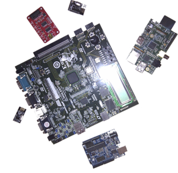
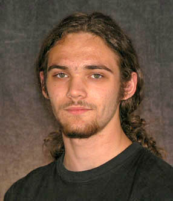

S3++ Požega 2013 (7.-17. kolovoza): PROGRAM
PROJEKTI
- Dizajniranje procesora za rekonfigurabilne platforme
- "Bottom-up": sinteza i upotreba magnetskih nanočestica
- Pretraživanje podataka sa svrhom pronalaska biomarkera dijabetesa
- Dešifriranje događaja u prošlosti upotrebom drevne DNA
- Kako ubiti supravodljivost
- "Dupla opasnost": dinamika dvostrukog njihala
RADIONICE
- Čudni, drugačiji i brzi: Kvantni algoritmi
- Zašto nam prevrtljivi virusi gripe svake godine zadaju probleme?
- OS personalizacija – kreiraj vlastiti sustav
- Složenost kompleksnih spojeva
- Mjerenje Svemira
- Ferofluidi - čudo magnetizma
PREDAVANJA I OKRUGLI STOLOVI
PROJEKTI
Dizajniranje procesora za rekonfigurabilne platforme
Field Programmable Gate Arrays (FPGA) čipovi su integrirani strujni krugovi koji sadrže veliki broj logičkih komponenti koje se mogu konfigurirati tako da odrade praktički bilo koju logičku funkciju čime nam omogućavaju apstraktni razvoj hardverskih komponenti. Oni su brzi, energetski efikasni, paralelni i rekonfigurabilni te nemaju predodređenu ulogu u funkciji hardware-a, nego omogućuju svakom dizajneru rekonfiguraciju čipa pomoću programskih jezika (VHDL, Verilog) kako bi čipove mogli iskoristiti u različitim područjima, od radijskih demodulatora do procesiranja videa i zvuka, odnosno u poboljšavanju procesora računala (CPU). FPGA čipovi se svakodnevno koriste u različitim uređajima koje koristimo, od radija do internet rutera.
Cilj ovog projekta bit će dizajniranje, razvoj i implementacija kompaktnog i efikasnog mikroprocesora (µP) sa FPGA jezgrom koja će moći odraditi mali set instrukcija (set se može i širiti). Mikroprocesor ćemo nakon toga iskoristiti u svrhu sastavljanja malog uređaja, npr. kalkulatora. Objasnit ćemo osnovne koncepte digitalne logike i elektronike kao osnova konstruiranja digitalnih sistema. Proučit ćemo i komponente te operativnost tipičnog mikroprocesora u detalje. Nadalje, polaznici će naučiti osnove konstrukcije FPGA čipova kako bi razumijeli učinak njihovog dizajna u fizičkim uređajima, te će koristiti VHDL i Xilinx set alata za njihovu sintezu i verifikaciju.
 Ivan Sović
Ivan Sović Institut Ruđer Bošković, Zagreb
Ivan trenutno radi na doktoratu iz računalnih znanosti u Centru za Informatiku i Računarstvo na Institutu Ruđera Boškovića u Zagrebu. Diplomirao je u području elektronike i računalnog inžinjerstva na Fakultetu elektrotehnike i računarstva u Zagrebu 2010. godine. Bavi se bioinformatikom, kemoinformatikom, visokoprocesivnim računarstvom, procesiranjem signala i elektronikom. Ivan je vodio projekt na Ljetnoj školi znanosti 2011. U slobodno vrijeme voli slušati glazbu, bavi se fotografijom, voli igrati biljar, plivati i trčati.
"Bottom-up": sinteza i upotreba magnetskih nanočestica
 Nanoznanost i nanotehnologija nova su područja koja sve više potiču interdisciplinarnost, spajanjem područja kemije, biologije, fizike i znanosti o materijalima. Osnovna ideja je naučiti kako kontrolirali tvari na molekularnom ili atomskom nivou. Iako je ovo samo početak, prva generacija nanotehnologije se počela koristiti u svrhu poboljšavanja materijala, odnosno u području medicine. Nanočestice su odlični pokazatelji kako svojstva malih čestica mogu pokazivati kompletno različita svojstva od većih nakupina materije te pritom imaju ulogu u spajanju klasičnih i kvantnih svojstava materije.
Nanoznanost i nanotehnologija nova su područja koja sve više potiču interdisciplinarnost, spajanjem područja kemije, biologije, fizike i znanosti o materijalima. Osnovna ideja je naučiti kako kontrolirali tvari na molekularnom ili atomskom nivou. Iako je ovo samo početak, prva generacija nanotehnologije se počela koristiti u svrhu poboljšavanja materijala, odnosno u području medicine. Nanočestice su odlični pokazatelji kako svojstva malih čestica mogu pokazivati kompletno različita svojstva od većih nakupina materije te pritom imaju ulogu u spajanju klasičnih i kvantnih svojstava materije.

Ruben David Rogaciano Ramalho
Instituto Superior Técnico, Lisboa, Portugal
Ruben je diplomirao biokemiju na Sveučilištu u Lisabonu 2005. godine, a nedavno je završio doktorat iz biokemijskog inžinjerstva na Institutu Superior Técnico, također u Lisabonu. Radi u području biofizike i bionanotehnologije, dok ga načelno interesira podrijetlo osnovnih svojstava kompleksnih sustava. Kad ne putuje, Ruben voli raspravljati o lošim filmovima s prijateljima, igrati tenis, čitati ili igrati videoigrice i društvene igre.
Pretraživanje podataka sa svrhom pronalaska biomarkera dijabetesa
 Dijabetes je često smatran jednostavnom bolešću, iako postoje različiti tipovi dijabetesa sa različitom dijagnozom i tretmanima. MODY podtip dijabetesa je veoma rijedak tip dijabetesa koji je često krivo dijagnosticiran kao dijabetes tipa 1 ili tipa 2. Standardna dijagnoza postavlja se pomoću krvnih ili oralnih testova tolerancije na glukozu, dok je MODY kao nasljednji oblik dijabetesa, moguće potvrditi samo pomoću genetičkog testiranja što je u nekim zemljama nepraktično i skupo.
Dijabetes tipa 1 se tretira inekcijama inzulina, dok se MODY može tretirati samo lijekovima, pri čemu mnogi pacijenti , zbog krive dijagnoze, godinama dobivaju krivi tretman. Glikozilacija je jedna od najviše istraženih modifikacija proteina, te ona utječe na njihovu sturkturu i funkciju. Analiza N-glikoma ima veliki potencijal postanka vodeće dijagnostičke metode, s obzirom na neinvazivnost metode u kojoj se uzima uzorak krvi i kvantificira prisutnost glikana. Analize glikana, proteina krvne plazme, u oboljelima od dijabetesa dale su naslutiti postojanje MODY biomarkera, tzv. DG9-indeksa. U ovom projektu studenti će upoznati proces određivanja obrasca u podacima. Koristit će pritom različite statističke metode i pretraživanje podataka u svrhu otkrivanja MODY pacijenta u populaciji dijabetičara. Glavni izazov predstavlja programiranje u programskom jeziku R te dobiveno znanje upotrijebiti u analizi podataka dijabetesa. Tijekom projekta sudionici će zaviriti u područje glikomike i istražiti efikasnost pojedinih glikana u svrhu određivanja biomarkera za MODY podtip dijabetesa.
Dijabetes je često smatran jednostavnom bolešću, iako postoje različiti tipovi dijabetesa sa različitom dijagnozom i tretmanima. MODY podtip dijabetesa je veoma rijedak tip dijabetesa koji je često krivo dijagnosticiran kao dijabetes tipa 1 ili tipa 2. Standardna dijagnoza postavlja se pomoću krvnih ili oralnih testova tolerancije na glukozu, dok je MODY kao nasljednji oblik dijabetesa, moguće potvrditi samo pomoću genetičkog testiranja što je u nekim zemljama nepraktično i skupo.
Dijabetes tipa 1 se tretira inekcijama inzulina, dok se MODY može tretirati samo lijekovima, pri čemu mnogi pacijenti , zbog krive dijagnoze, godinama dobivaju krivi tretman. Glikozilacija je jedna od najviše istraženih modifikacija proteina, te ona utječe na njihovu sturkturu i funkciju. Analiza N-glikoma ima veliki potencijal postanka vodeće dijagnostičke metode, s obzirom na neinvazivnost metode u kojoj se uzima uzorak krvi i kvantificira prisutnost glikana. Analize glikana, proteina krvne plazme, u oboljelima od dijabetesa dale su naslutiti postojanje MODY biomarkera, tzv. DG9-indeksa. U ovom projektu studenti će upoznati proces određivanja obrasca u podacima. Koristit će pritom različite statističke metode i pretraživanje podataka u svrhu otkrivanja MODY pacijenta u populaciji dijabetičara. Glavni izazov predstavlja programiranje u programskom jeziku R te dobiveno znanje upotrijebiti u analizi podataka dijabetesa. Tijekom projekta sudionici će zaviriti u područje glikomike i istražiti efikasnost pojedinih glikana u svrhu određivanja biomarkera za MODY podtip dijabetesa.
 Lucija Klarić
Lucija Klarić
Genos Ltd, Zagreb
Lucija je diplomirala molekularnu biologiju u listopadu 2012., na Prirodoslovno-matematičkom fakultetu u Zagrebu. Tijekom studiranja shvatila je važnost interdisciplinarnosti u znanosti, te specijalizirala u području računalne biologije. Trenutno radi u Genosu d.o.o. na analizi podataka iz područja glikomike. Ovo je Lucijin prvi dolazak na Ljetnu školu znanosti, iako je održala nekoliko radionica na Ljetnoj tvornici znanosti u razdoblju od 2010 do 2012. U slobodno vrijeme svira tamburicu u Samoborskom tamburaškom sastavu te uživa u bicikliranju, ronjenju i planinarenju.
Dešifriranje događaja u prošlosti upotrebom drevne DNA
 Drevna DNA je prvi puta otkrivena 1984. kada je grupa znanstvenika predvođena Rossom Higuchijem uspjela izolirati male količine DNA iz muzejskog primjerka stepske zebre, izumrle vrste zebre. Godinu dana kasnije, Svante Pääbo je izolirao DNA iz egipatske mumije stare 2,400 godina. Razvojem metode lančane reakcije polimerazom koja koristi DNA polimerazu za stvaranje milijuna kopija željenog DNA fragmenta, započeo je razvoj područja drevne DNA. Danas možemo izolirati DNA iz različitih arheoloških i paleontoloških ostataka kako bismo istražili genetsku vezu između davno izumrlih organizama i njihovih živućih rođaka. No, koliko daleko u prošlost možemo dosegnuti? Je li moguće rekonstruirati genom dinosaura ili neandertalca?
Drevna DNA je prvi puta otkrivena 1984. kada je grupa znanstvenika predvođena Rossom Higuchijem uspjela izolirati male količine DNA iz muzejskog primjerka stepske zebre, izumrle vrste zebre. Godinu dana kasnije, Svante Pääbo je izolirao DNA iz egipatske mumije stare 2,400 godina. Razvojem metode lančane reakcije polimerazom koja koristi DNA polimerazu za stvaranje milijuna kopija željenog DNA fragmenta, započeo je razvoj područja drevne DNA. Danas možemo izolirati DNA iz različitih arheoloških i paleontoloških ostataka kako bismo istražili genetsku vezu između davno izumrlih organizama i njihovih živućih rođaka. No, koliko daleko u prošlost možemo dosegnuti? Je li moguće rekonstruirati genom dinosaura ili neandertalca?

Mateja Hajdinjak
Prirodoslovno-matematički fakultet, Sveučilište u Zagrebu
Mateja je diplomirala molekularnu biologiju na Prirodoslovno-matematičkom fakultetu Sveučilišta u Zagrebu, uz veliki znanstveni interes za evolucijskom genomikom, molekularnom antropologijom i paleoantropologijom. Njena želja je nastaviti svoj studj na doktoratu koji kombinira izolaciju drevne DNA iz hominida sa računalnom genomikom. Ovo je prvi Matejin susret s Ljetnom školom znanosti. U slobodno vrijeme uživa u čitanju knjiga, crtanju po zidovima, plesanju i pečenju kolača svojim prijateljima.
Kako ubiti supravodljivost
 Visokotemperaturni supravodiči otkriveni su prije 25 godina i od tada se nalaze u prvom planu istraživanja moderne fizike čvrstog stanja. Većina supravodljivih sustava već je konstruirana i proučena, no mehanizam supravodljivosti i dalje predstavlja nepoznanicu. Ipak, poznato je da svi supravodiči sadrže slojeve atoma bakra i kisika koji imaju važnu ulogu u vođenju struje bez otpora. Naš cilj je uništiti supravodljivo stanje zamjenom atoma bakra s magnetskim i ne-magnetskim nečistoćama. Različite nečistoće u materijalu će pri tom omogućiti određivanje svojstava supravodljivih slojeva. Dva različita projekta – kemijski (sinteza uzoraka) i fizički (detaljna karakterizacija uzoraka) će blisko surađivati kako bi u konačnici zajedno mogli donijeti glavne zaključke o ovom problemu.
Visokotemperaturni supravodiči otkriveni su prije 25 godina i od tada se nalaze u prvom planu istraživanja moderne fizike čvrstog stanja. Većina supravodljivih sustava već je konstruirana i proučena, no mehanizam supravodljivosti i dalje predstavlja nepoznanicu. Ipak, poznato je da svi supravodiči sadrže slojeve atoma bakra i kisika koji imaju važnu ulogu u vođenju struje bez otpora. Naš cilj je uništiti supravodljivo stanje zamjenom atoma bakra s magnetskim i ne-magnetskim nečistoćama. Različite nečistoće u materijalu će pri tom omogućiti određivanje svojstava supravodljivih slojeva. Dva različita projekta – kemijski (sinteza uzoraka) i fizički (detaljna karakterizacija uzoraka) će blisko surađivati kako bi u konačnici zajedno mogli donijeti glavne zaključke o ovom problemu.
"Sinteza i dopiranje supravodljive keramike" (Voditelj projekta: Damjan Pelc): Svako istraživanje novih i stranih svojstava materijala započinje njegovom kemijskom sintezom. Supravodljivu keramiku je relativno lako napraviti upotrebom pravilnih metoda i sastojaka, što ćemo otkriti u ovom projektu. Fokus će nam biti na specifičnom sustavu YBCO (YBa2Cu3O7), pri čemu ćemo upotrijebiti dvije metode sinteze i dopiranja – uvođenja nečistoća umjesto atoma bakra u svrhu narušavanja supravodljivosti. Dobivene uzorke ćemo kemijski analizirati pomoću jodometirjske titracije dok ćemo supravodljivost testirati levitacijom magneta, kako bismo na kraju odredili koja od metoda je bolja. Kolege s fizičkog projekta će nakon toga precizno izmjeriti naše najbolje uzorke nakon čega ćemo zajedno analizirati utjecaj nečistoća na supravodljivost.
"Mjerenje magnetizma u supravodičima visoke temperature "High-TC" (Voditelj projekta: Tonči Cvitanić): Magnetizam je veoma važan u fizici čvrstog stanja s obzirom da on opisuje ponašanje elektrona u materijalu. Supravodiči otporni na visoke temperature sadrže slobodne, pokretljive elektrone kao i obični metali. Međutim, ispod određene temperature, Tc, elektroni u supravodičima počinju surađivati i voditi struju bez ikakvog otpora. Naš cilj je izmjeriti čudna magnetska svojstva tog supravodljivog stanja. Dizajnirati ćemo i konstruirati osjetljiv uređaj za mjerenje magnetizma materijala – AC susceptometar. Njime ćemo mjeriti odziv uzoraka različitih nečistoća dobivenih iz kemijskog projekta, ovisno o temperaturi počevši od sobne temperature pa sve do temperature ispod -200°C. Proučavat ćemo osnove magnetizma u materijalima, naučiti nešto o prirodi supravodljivosti, pokušati predvidjeti utjecaj različitih nečistoća na supravodljivost te usporediti ideje s dobivenim eksperimentalnim rezultatima.

Damjan Pelc
Prirodoslovno-matematički fakultet, Sveučilište u Zagrebu
Damjan je diplomirao 2011. godine na Odsjeku Fizike, Prirodoslovno-matematičkog fakulteta na Sveučilištu u Zagrebu i trenutno radi na projektu koji istražuje supravodiče visoke temperature u laboratoriju za NMR na Odsjeku Fizike. Vodio je projekt na Ljetnoj školi znanosti pet puta. Obožava sastavljati različite stvari (pogotovo ukoliko rade nakon toga), te u različitim tipovima glazbe, vlakovima i povremenom stolnom tenisu.

Tonči Cvitanić
Prirodoslovno-matematički fakultet, Sveučilište u Zagrebu
Tonči je zaposlen kao znanstveni novak na Odsjeku Fizike, Prirodoslovno-matematičkog fakulteta na Sveučilištu u Zagrebu. Bavi se NMR spektroskopijom supravodiča visoke temperature te trenutno radi na razvijanju fosforocentnog termometra. Asistent je na fakultetu. Ovo je njegova prva Ljetna škola znanosti. Tonči uživa u dugim štenjama, planinarenju i strojevima, pogotovo podmornicama.
"Dupla opasnost": dinamika dvostrukog njihala
 Objesimo malu kuglicu na kraj drvenog štapića, uhvatimo štapić za kraj bez kuglice i zanjišimo ga. Njegovo gibanje je periodično, glatko i predvidljivo – to je obično njihalo. Zatim na prvo njihalo (na kraj bez kuglice) zakačimo još jedan štapić i ponovno zanjišimo kraj s kuglicom. Gibanje ovog sustava je nepravilno i kompleksno te može biti krajnje nepredvidivo. Ovo je dvostruko njihalo – sustav koji je iznimno osjetljiv na promjene početnih uvjeta. Takvi sustavi često se nazivaju "kaotičnima". Postoji mnogo kaotičnih sustava, kako u matematici tako i u stvarnom svijetu: apstraktna nelinearna jednadžba se može ponašati kaotično, a jednako nepredvidljiva je i klima na Zemlji ("efekt leptira"). Unatoč prividnoj jednostavnosti, problem dvostrukog njihala je iznimno bitan jer je to pravi fizikalni sustav koji pokazuje kaotično gibanje.
Objesimo malu kuglicu na kraj drvenog štapića, uhvatimo štapić za kraj bez kuglice i zanjišimo ga. Njegovo gibanje je periodično, glatko i predvidljivo – to je obično njihalo. Zatim na prvo njihalo (na kraj bez kuglice) zakačimo još jedan štapić i ponovno zanjišimo kraj s kuglicom. Gibanje ovog sustava je nepravilno i kompleksno te može biti krajnje nepredvidivo. Ovo je dvostruko njihalo – sustav koji je iznimno osjetljiv na promjene početnih uvjeta. Takvi sustavi često se nazivaju "kaotičnima". Postoji mnogo kaotičnih sustava, kako u matematici tako i u stvarnom svijetu: apstraktna nelinearna jednadžba se može ponašati kaotično, a jednako nepredvidljiva je i klima na Zemlji ("efekt leptira"). Unatoč prividnoj jednostavnosti, problem dvostrukog njihala je iznimno bitan jer je to pravi fizikalni sustav koji pokazuje kaotično gibanje.
U sklopu ovog projekta studenti će istražiti očaravajuću dinamiku dvostrukog njihala kroz konstruiranje fizikalnog njihala i usporedbu njegovog gibanja s rezultatima koje predlaže teorija. Fokusirat ćemo se i na model i na stvarni sustav pri čemu teoretski dio projekta zahtijeva savladavanje elementarne fizike, diferencijalnih jednadžbi i kaosa a praktični dio uključuje konstrukciju dvostrukog njihala, mjerenja i pisanje jednostavnih programa potrebnih za praćenje gibanja. Za rješavanje jednadžbi koje generira model koristit ćemo numeričke algoritme te će projekt uključivati i nešto programiranja. Interdisciplinarnost koja se provlači kroz cijeli projekt je nužna da bi malo bolje razumjeli kaos a polaznici će naučiti i kako se naizgled jednostavni sustav može ponašati vrlo složeno.

Renan Gross
Technion - Izraelski institut za tehnologiju, Izrael
Renan Gross je student matematike i fizike na Technionu - Izraelskom institutu za tehnologiju. Zanimaju ga sva područja znanosti od matematike i računalstva do fizike i biologije. Sudjelovao je na Ljetnoj školi znanosti 2011. kao voditelj radionice i 2012. kao voditelj projekta. U slobodno vrijeme piše blog o znanosti, politici i životu, svira klavir, vozi bicikl i balansira na žici.
RADIONICE
Čudni, drugačiji i brzi: Kvantni algoritmi
Kvantni algoritmi su mnogo brži, ali se znatno razlikuju od svojih klasičnih analoga. Kvantni algoritmi koriste neke specijalne efekte kvantne mehanike kako bi ostvarili prednost u brzini izvođenja pred klasičnim algoritmima. Želimo li razumjeti kako rade osnovni kvantni algoritmi, prvo je potrebno naučiti kako računala računaju. Nakon toga slijedi kratak uvod u kvantnu mehaniku i upoznavanje s konceptima i fenomenima kvantne mehanike koje koriste kvantni procesori kako bi postigli superiornu brzinu izvođenja. Nakon kratke usporedbe klasičnih s kvantnim algoritmima napravit ćemo naš prvi kvantni algoritam. Glavni cilj je konstruirati kvantni algoritam koji će pretražiti nesortiranu bazu podataka od N članova u korijen od N iteracija.
Voditelj radionice:

Domagoj Fijan, Prirodoslovno-matematički fakultet, Sveučilište u Zagrebu
Zašto nam prevrtljivi virusi gripe svake godine zadaju probleme?
Odlasci doktoru po dozu cjepiva nikome nisu ostali u dobrom sjećanju. No na sreću ta neugodna cijepljenja nas štite od brojnih opasnih bolesti kojima bismo se mogli zaraziti u budućnosti. A što je s cjepivom protiv gripe? Zašto se svake godine treba obnavljati otpornost na gripu? Ova radionica će pokazati zašto je bitno redovito se cijepiti i što je to u virusnoj čestici gripe što se mijenja i uzrokuje nova oboljenja. Da bi to zaključili, polaznici će pronaći podatke o strukturi virusne čestice kao i njegovu DNA sekvencu te sastojke virusnih cjepiva iz različitih godina. Znanje pretraživanja podataka u brojnim biološkim bazama može biti vrlo korisno za polaznike i njihove buduće projekte.
Voditelj radionice:

Nikolina Hanžić, Prirodoslovno-matematički fakultet, Sveučilište u Zagrebu
OS personalizacija – kreiraj vlastiti sustav
Većina ljudi treba računalo s operativnim sistemom koji omogućuje brzo i efikasno rješavanje problema. Pritom se većinom prilagođavamo poznatim operativnim sustavima kao što su Windows i MAC operativni sustav. Pa zašto ne bismo napravili vlastiti operativni sistem koji je prilagođen nama? Krenimo i napravimo operativni sistem skrojen po mjeri svake osobe!
Voditelj radionice:

Jens Rauch, Sveučilište u Tübingenu, Njemačka
Složenost kompleksnih spojeva
Kompleksni spojevi se sastoje od atoma ili iona metala okruženog vezanim molekulama ili ionima koje nazivamo ligandima. Ovaj tip spojeva je karakterističan za prijelazne metale, a svoju primjenu ti kompleksni spojevi nalaze u mnogim dijelovima života, od industrije, fotografije i dermatologije do kemoterapije. Metalni ioni okruženi vezanim molekulama također su prisutni i u mnogim proteinima i od velikog su značaja za njihovu funkciju. Cilj ove radionice jest naučiti nešto o strukturi, svojstvima te metodama sinteze i analize ovih korisnih spojeva. Također ćemo izvesti eksperiment u kojem ćemo sintetizirati kompleks neobične strukture te ćemo se suočiti s problemima koji se javljaju u anorganskoj sintezi kao posljedica svojstava pojedinih tvari.
Voditelj radionice:

Nikolina Šoštarić, Prirodoslovno-matematički fakultet, Sveučilište u Zagrebu
Mjerenje Svemira
U ovoj radionici upoznat ćemo nekoliko različitih metoda mjerenja udaljenosti koju koriste astronomi. Objasnit ćemo osnovna načela fizike u svakoj od metoda mjerenja, pri ćemu će sudionici primijeniti svoje znanje na različite setove zadataka. Pokušat ćemo rekreirati evoluciju svemira od trena kako je izgledao na početku, nakon čega ćemo adaptirati geocentrični model i nadograditi model sve do moderne kozmologije 21. stoljeća.
Voditelj radionice:

Vanja Šarković, Sveučilište u Beogradu, Srbija
Ferofluidi - čudo magnetizma
Magnetizam, i sve što on obuhvaća, je jedno od najsloženijih područja fizike, ali isto tako omogućuje i neke od najsloženijih i najljepših efekata fizike. U skladu s tim postoji velik broj magnetskih materijala vrlo različitih svojstava te se aktivno radi na otkrivanju novih. U sklopu ove radionice polaznici će se upoznati s magnetskim materijalom koji je neobičan i za ove standarde, ferofluidom. Ferofluidi su koloidne otopine magnetskih čestica te se efektivno ponašaju kao magnetske tekućine. To nam svojstvo daje nevjerojatne mogućnosti manipuliranja I oblikovanja materijala magnetskim poljima. Nakon uvoda u magnetizam i magnetske materijale polaznici će napraviti vlastiti ferofluid te istražiti njegova zadivljujuća svojstva.
Voditelj radionice:

Igor Marković, Prirodoslovno-matematički fakultet, Sveučilište u Zagrebu
PREDAVANJA I OKRUGLI STOLOVI
- Okrugli stol: Jesam li premlad da budem znanstvenik? - Camille Breton & Cathy Oualian, Association Paris-Montagne & Marko Košiček, EVO
- Predavanje: Grafen - od temeljne znanosti do tehnologije - Hrvoje Buljan, Prirodoslovno-matematički fakultet, Sveučilište u Zagrebu
- Predavanje: Genetski modificirani virusi u borbi protiv raka - Matko Čančer, Sveučilište u Uppsali, Švedska
- Predavanje: Primjena ionskih akceleratora u razvoju novih materijala - Milko Jakšić, Institut Ruđer Bošković, Zagreb
- Predavanje: Pokretanje IT Startup-a: Tehnički dio - Leo Sutic, Inspired Labs, Švedska
- Predavanje: Kako učinkovito napisati znanstveni članak? - Iva Bojić, Fakultet elektrotehnike i računalstva, Zagreb
- Predavanje: UI 1.01: Anatomija prelijepog uma - Matko Bošnjak, Fakultet elektrotehnike i računalstva, Zagreb
Copyright © 2014 Društvo za edukaciju van okvira (EVO). Sva prava pridržana.
Web dizajn: Martina Mijušković. Općeniti tekst: Branimir Lukić i Martina Mijušković. Prijevod na hrvatski: Matilda Maleš.